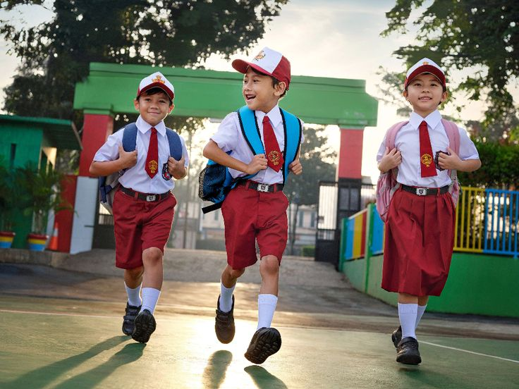
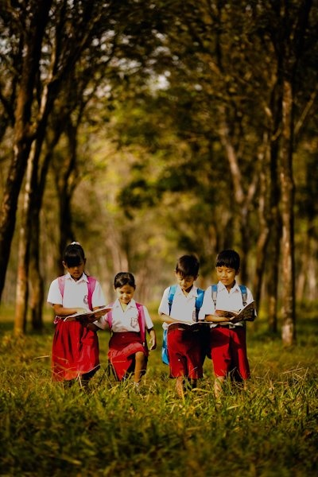

Kelas Literasi & Numerasi
Pendampingan membaca, menulis, dan berhitung setelah jam sekolah, dengan suasana belajar yang menyenangkan.
Untuk: siswa SD
Cakrawala membuka akses belajar yang layak bagi anak-anak di daerah yang tertinggal, supaya mereka bisa melihat masa depan yang lebih luas.

Cakrawala adalah garis tempat langit bertemu bumi, tempat matahari terbit.
Kami memilih nama ini karena pendidikan bekerja dengan cara yang sama: perlahan membuka pandangan, dari gelap menuju terang. Setiap buku yang dibaca dan setiap pelajaran yang dipahami membuat cakrawala seorang anak sedikit lebih luas.
Banyak anak sudah duduk di bangku sekolah, tetapi belum lancar membaca dan berhitung.
Guru di daerah jarang mendapat pelatihan yang berkelanjutan.
Buku yang menarik dan sesuai usia sulit didapat di luar kota besar.
Kami tidak hanya mendampingi anak, tetapi juga guru dan lingkungan tempat mereka belajar.
Pendampingan membaca, menulis, dan berhitung setelah jam sekolah, dengan suasana belajar yang menyenangkan.
Lokakarya metode mengajar aktif, supaya kelas menjadi tempat anak bertanya, mencoba, dan berani berpendapat.
Perpustakaan kecil di desa atau kampung yang dikelola oleh relawan setempat, dekat dengan rumah anak-anak.

Program dijalankan bersama relawan lokal, bukan didatangkan dari luar.
Yang didampingi bukan hanya anak, tetapi juga guru dan lingkungan belajarnya.
Pojok baca dan guru terlatih tetap berjalan setelah program selesai.
Pilih peran yang paling cocok untuk Anda.
Donasi rutin bulanan atau saat kampanye, untuk mendampingi anak belajar.
Mulai berdonasi → PerusahaanDukung program atau pengadaan buku, lengkap dengan laporan yang rapi.
Ajak bermitra → Yayasan & hibahDukung program jangka menengah dengan rencana dan indikator yang jelas.
Diskusikan program → RelawanIkut mengajar, mengelola pojok baca, atau membantu dokumentasi.
Daftar relawan →Setiap dukungan membantu anak-anak belajar dengan lebih percaya diri. Hubungi kami untuk mulai.
Hubungi kami ↗